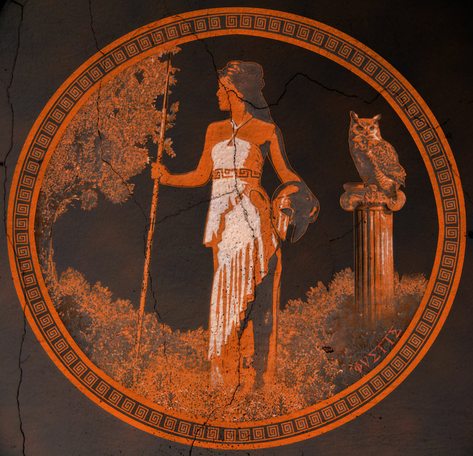

About Me
Athena was the Greek virgin goddess of reason, intelligent activity, arts and literature. She was the daughter of Zeus; her birth is unique in that she did not have a mother. Instead, she sprang full grown and clad in armour from Zeus' forehead.
She was fierce and brave in battle; however, she only took part in wars that defended the state and home from outside enemies. She was the patron of the city, handcraft, and agriculture. She invented the bridle, which permitted man to tame horses, the trumpet, the flute, the pot, the rake, the plow, the yoke, the ship, and the chariot. She was the embodiment of wisdom, reason, and purity. She was Zeus' favourite child and was allowed to use his weapons including his thunderbolt. Her holy tree was the olive tree and she was often symbolised as an owl.
She became the patron goddess of Athens after winning a contest against Poseidon by offering the olive tree to the Athenians. It is evident that Athena and Athens derive from the same root; Athens (or Athenae) is in plural form, because it represents the sisterhood of the goddess that existed there. Similarly, Athena was called Mykene in the city of Mycenae (also a plural after the respective sisterhood), and Thebe in the city of Thebes (or Thebae, both plural forms).
Connect with Me